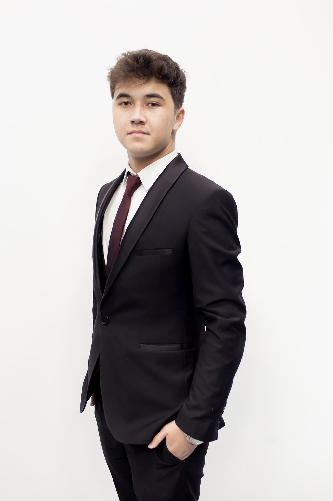

INTERNATIONAL RELATIONS · DIPLOMACY · LEADERSHIP
Ziyo
Abdullazizov
International Relations student at Ege University
Türkiye Scholarships recipient with a background in Model United Nations, conference organisation and student leadership. Interested in diplomacy, global governance and international security.
40+MUN conferences
200+delegates at ALTUIT MUN
50+debate participants

A PRACTICAL PROFILE
Curiosity, coordination
and constructive dialogue.
My interests bring together international affairs and the creation of spaces for discussion, collaboration and student participation.
EXPLORE
Selected areas
Explore my academic background, conference participation and student initiatives.